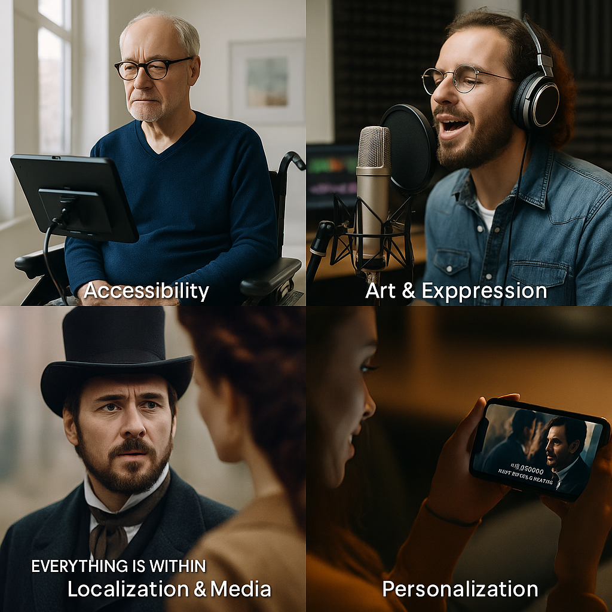
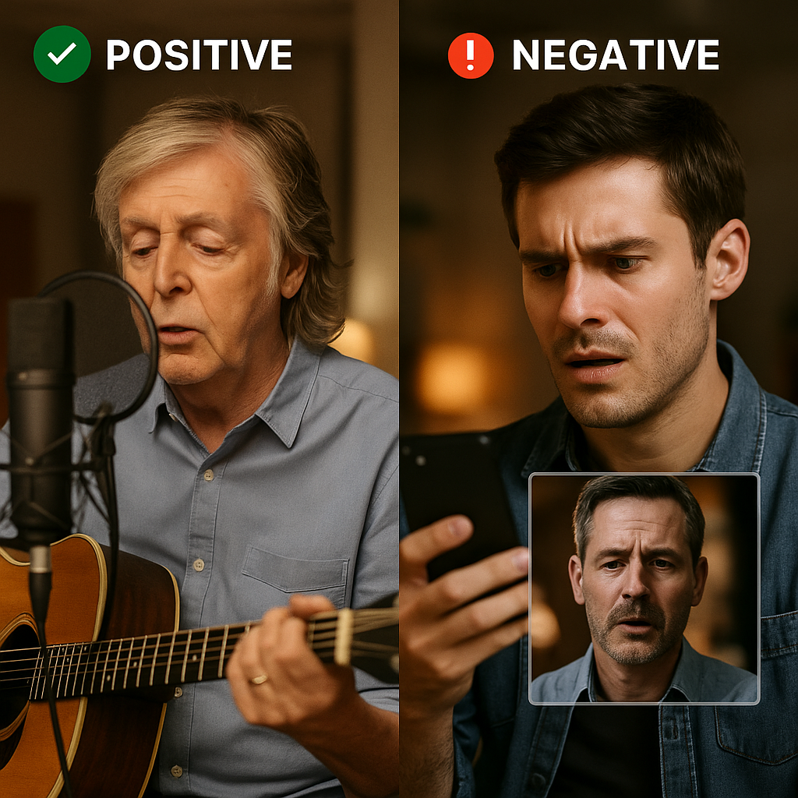
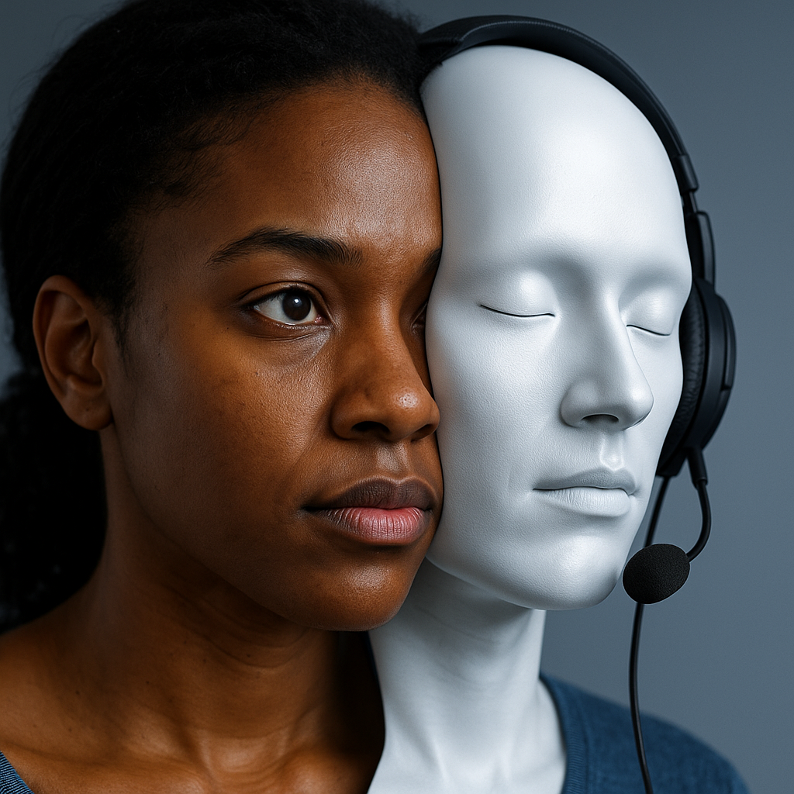

Voice isn’t just sound.
Its identity, memory, and trust.
Today, AI can replicate it with uncanny accuracy.
What once felt like science fiction is now available on consumer apps.
✨ This shift brings creativity, access, and freedom, but also serious ethical dilemmas.
The question is simple but profound:
Will AI voice cloning deepen human connection, or destroy the very trust we place in voices?
⚡ The Voice Revolution — From Lab to Living Room
- 🤖 Neural networks and deep learning now clone voices with just minutes of audio.
- 🛠️ Tools like Descript, and ElevenLabs have democratized access.
- 🎬 Pop culture examples: actors “resurrected,” musicians cloned, and influencers powered by synthetic speech.
🚨 The Shadows — Risks of AI Voice Cloning
Misinformation & Disinformation 📰
Fake audio of public figures could sway elections or incite panic. Voices are the new “fake news” delivery vehicle.
Fraud & Scams 💸
Cloned voices of CEOs or family members used to trick victims into sending thousands of dollars.
Just one example: a UK executive reportedly lost €220,000 after receiving a call from a voice he believed was his CEO—except it wasn’t.
Identity Theft & Consent ❌
Without legal protections, anyone’s voice can be cloned and used without consent.
This isn’t just theft.
It’s erasure of identity.
Erosion of Trust 🕳️
If hearing is no longer believing, what becomes of legal testimony, recorded evidence, or personal messages?
🌟 The Light — Positive Applications of Voice AI

Accessibility 🗣️
Synthetic voices can restore personal voice to ALS patients or others losing their ability to speak, preserving identity when it matters most.
Art & Expression 🎶
Musicians and storytellers now craft immersive experiences using their own cloned voices—in multiple languages, accents, and emotional tones.
Localization & Media 🌐
Films dubbed in your language, but with the actor’s own voice.
Personalization 💬
Imagine films dubbed in your native language using the actor’s cloned voice—preserving both performance and accessibility.
⚖️ Voice AI: A Double-Edged Sword
Voice cloning is a tool.
Neither angel nor demon.
It mirrors the hands that wield it.
- 🪓 In the wrong hands: fraud, manipulation, mistrust.
- 🎨 In the right hands: art, access, comfort, expression.
📖 Case Studies — From Tribute to Trap

✅ Positive
Paul McCartney & John Lennon 🎸: Using AI, Paul revived John’s voice in "Now and Then” — a final Beatles single.
It was tender, consensual, and emotionally powerful.
❌ Negative
Corporate Fraud 💼: Voice AI scams tricked executives into wiring funds by mimicking CEOs.
Political Deepfakes 🗳️: Synthetic audio of leaders spread chaos online, later debunked.
🧰 Guardrails for Ethical Voice AI
- Consent First ✅: No cloning without explicit permission.
- Digital Watermarks 🔐: Inaudible signatures to confirm synthetic origins.
- Platform Responsibility ⚙️: No political impersonations or fraud-enabling features.
- Public Literacy 📚: Teach audiences that hearing ≠ believing.
🔮 Looking Ahead — Voice, Identity & Trust
- Synthetic voices will become seamless in daily life.
- The real challenge isn’t can we build them — it’s how will we use them.
- Our goal must be simple: ensure AI amplifies human dignity, not erases it
✨ Conclusion — Reclaiming Authentic Voice in a Synthetic Age

Voice cloning forces us to rethink ownership, consent, and authenticity.
It can resurrect artistry 🎨, preserve identity 🧠, and expand access 🌍.
It can also enable fraud 💸, fuel disinformation 📰, and erode trust 🕳️.
The choice isn’t in the algorithm.
It’s in us.